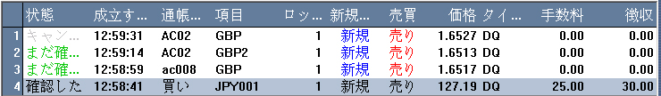

ワーキング注文リスト
注文画面にはお客様によるオンライン取引のあらゆる情報、即ち、ストップ・オーダーや未確認リミットオーダーが表示されます。

-
状況 - パネルから表示される指示は以下のいずれかで表示されます。
未成約 - ディーリングルームからの確認情報が停止される場合は、注文はワーキング注文リスト上に
未成約
と緑色で表示されます。
成約
-
取引デスクにて取引が成立すると、その注文取引成立状況が表示されます。お客様はシステムサインが消滅する迄にワーキング注文リストに発注します。
取消 -
何かが原因で指示が拒否された場合、その指示は灰色で“取消”と表示されます。お客様がそのサインを削除するまで、又は意識的に削除するまでオンライン中、画面はそのままの状態です。
-
時間 - 注文の状況によって、成約した日又は受注した日付や時間が表示されます。
-
口座 - 取引口座のコード
-
項目 - 指令を下した。その取引アイテムの必要とするコード。
-
ロット（枚数） - 指示した取引枚数を指します。
-
N/C - Nとは新規のこと、Cとは決済のこと
-
B/S - Bとは買い注文、Sとは売り注文のこと。
-
プライス - （相場）注文した状況によって、相場はセットプライスまたは成約した相場で表示する。
-
種類 - 注文指示の種類
-
費用 - 成約した注文に対する手数料叉は仲買業者手数料費用を指します。
-
雑費 - 成約した取引に係わる雑費又はその以外の費用を指します。
お客様は成約や実際の実行方法について情報が必要です。
お客様が望む注文箇所でダブルクリックすれば、取引指示令画面に次情報画面が表示されます。
-
1. 参考番号 - 注文に必要とする唯一の証明番号
-
2. 項目 - 取引手段の記号
-
3. プライス - （相場）成約した注文の要望相場
-
4.売買- 売りか買いか成約した注文よるものです。その一方、売り注文であらば、情報表示画面にあか色で表示され、買い注文であれば、青色で表示される。
-
5.ユニット
- 成約した注文のユニット枚数
-
6. 口座 - 成約した注文の口座
-
7.タイプ - 注文指令のタイプ
-
8.選択- 指値注文の選択によって、損益は良くなるが、またはストップするかの機能。
-
9. 成約した時間 - 成約した注文の時間
-
10時間切れ - 未成約のままであれば、その注文の時間切れがくるのです。
-
11 損益/費用 - 成約した注文にかかってくるすべての費用や出費と決済するため取引と係わる損益。
-
12新規 - その取引は決済ものであれば、成約した日付、枚数と新規成約した注文と一致する相場を表記される。
-
13注意事項 - システムメッセージでその指令のいろいろな状況を解説するところ。
-
14キャンセル - もし指値注文/ストップ/MOC/MOO/未成約のままの指令であれば、ボタンひとつでキャンセルすることができる。
-
15削除 - もしキャンセルした注文であれば、ワキング注文リストからその注文指令を削除するボタンです。
-
16退去 - ユーザーはその指令を表示される画面を閉じたければ、そのボタンをクリックすればよい。